滋賀である。琵琶湖である。
琵琶湖の北部、高島市マキノ町。
滋賀県とはいうものの福井県の敦賀市や小浜市に近く、畿内と北国を結ぶ最短ルートに位置する交通の要所として栄えた歴史を持つ場所だ。
<
この日のメインは両墓制の墓のリサーチだったのだが、その途中にどうしても
寄っておきたい寺があった。
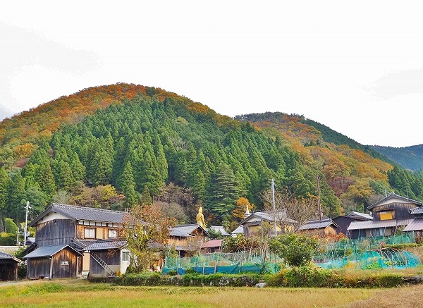
幹線道路から見るとこんな感じ。
ハイ。見事な
金ピカの大観音様がおわしますよ。
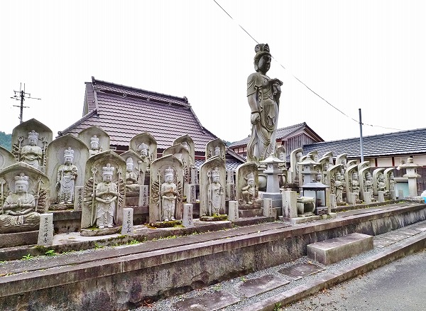
寺の名前は
長善寺。
曹洞宗のお寺である。
創建は江戸初期の慶長
17年。<
門前には西国三十三カ所の写し本尊の石像がズラリと並んでおり、ある種の圧を感じる。
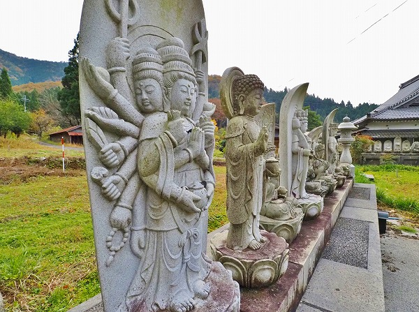
駐車場にも多くの石像が並び、独特の空気感を醸し出しているぞ。
何だか楽しそうじゃないか。
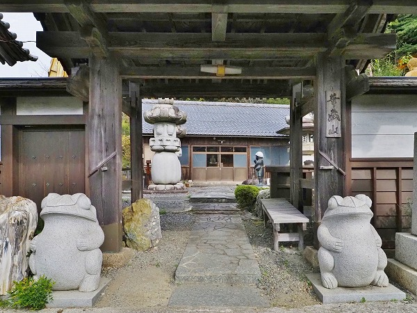
カエルが仁王像みたいだ。
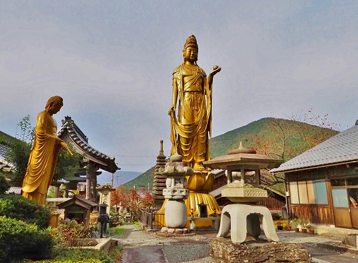
山門を潜って飛び込んでくるのは最前見えた大観音。
これまであちこちで見てきたタイプの観音像だ。
高さは20メートル程。多分FRP製。
多分私がこれまで日本中で見てきた観音像と同じ型で形成された大観音兄弟だろう。
手前にも中型のFRPの観音様。
正直言ってさして大きくない、地方でよく見るタイプの小～中規模の寺院である。
そこにこのサイズの観音像があること自体が結構意外な感じがした。
しかも境内には大きな燈籠や石塔、石像、鋳造製の仁王像などが林立しており、この時点で尋常でないお寺だなあ～、という印象だった。
しかしその後、
これらの事象は全て序章であったと痛感するのであった。
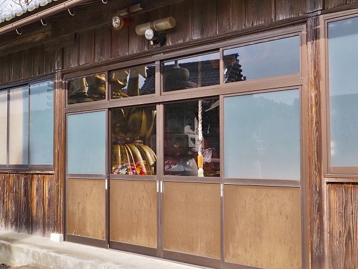
大観音の脇に本堂とは別のお堂があった。
観音という額があったので観音堂としておく。
直感的にここがこの寺の肝だ！と思い、中に入ってみる。
すると…
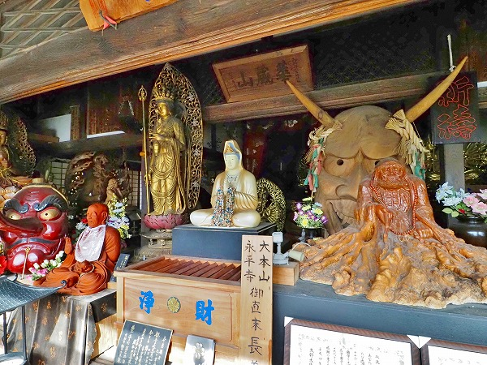
ビンゴ！
仏像＋αの混沌とした世界が広がっていた。
達磨、観音、おびんずるさま、天狗、般若？鬼？…
チョット情報量が多すぎて不覚にも一瞬フリーズしちゃいましたよ。
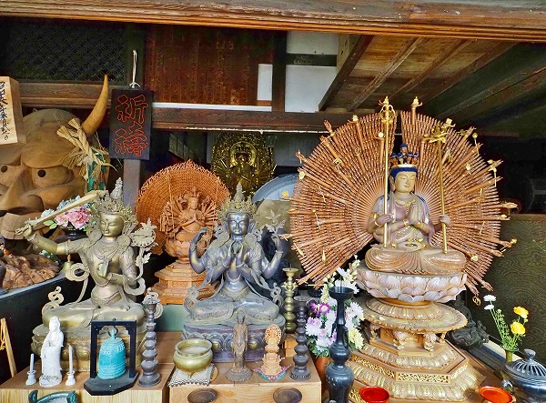
さらに追い打ちをかけるようにチベットの仏像やら千手観音やら…
一体何がどうしてこうなったのか？
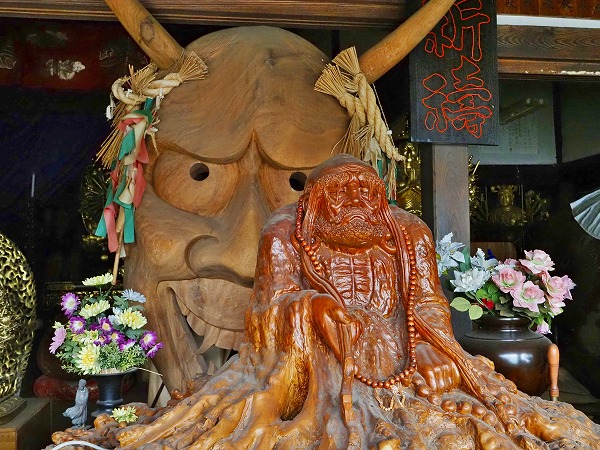
強烈なインパクトを放つ仏像群においてマックスのインパクトを放ちまくっているのはこちらの般若？鬼？の面。
人の背丈を優に超えた巨大な面である。
ここでこの面を装着できるのはサイズ的には外にある大観音像だけであろう。付けないけど。
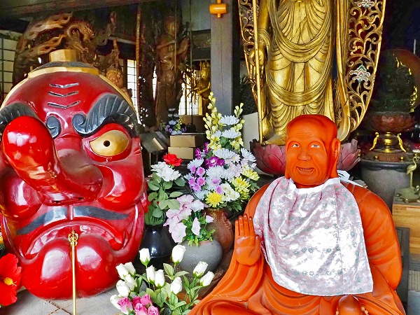
おびんずるさまと天狗の面。
赤い、以外の共通点があるのだろうか？
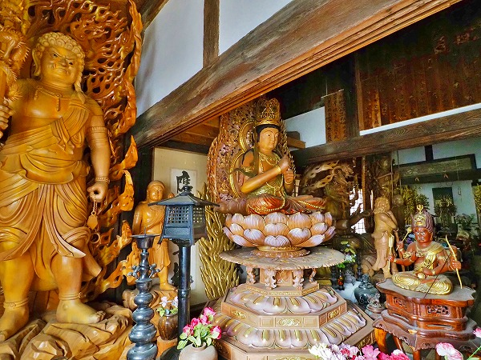
カオス！…という言葉しか思い浮かばない。
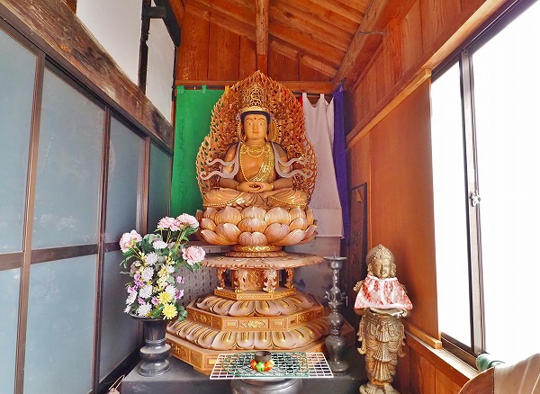
立派な仏像も堂内の仏像の数が多すぎて建物の片隅に追いやられている。
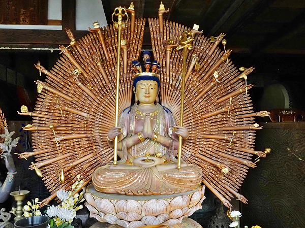
千手千眼観音。
ハッキリしたことは判らないが、薄く着彩してある感じや全体の造形が中国かベトナム辺りで造られた仏像のように思える。
違ってたらスミマセン。
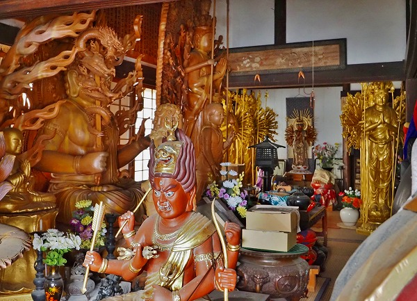
各仏像には花が手向けられてあり、それなりに祀られているのだろうが、これだけ数が多いと倉庫みたいな印象になってしまう。
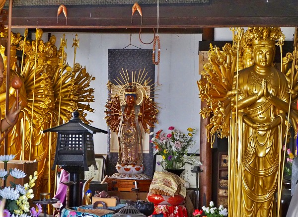
奥の方には千手観音が数体並んでおり、プチ三十三間堂みたいな雰囲気になっていた。
余りの圧縮陳列っぷりにぐうの音も出ませんでしたよ。
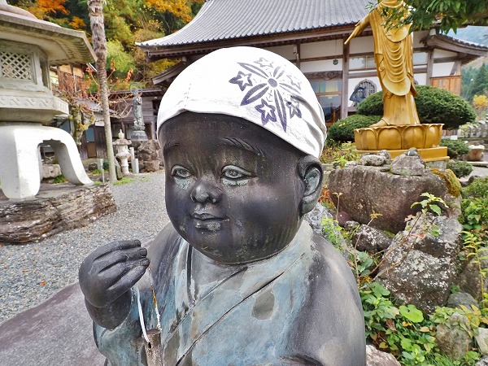
庭の小坊主。尻子玉抜かれたような表情でした。
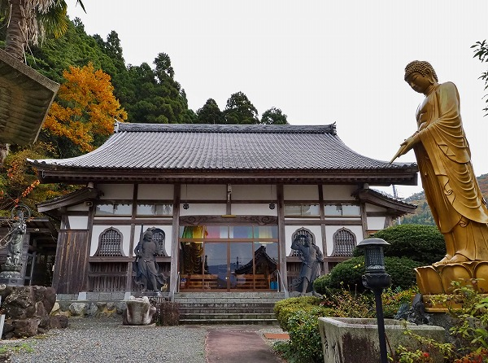
で、本堂。
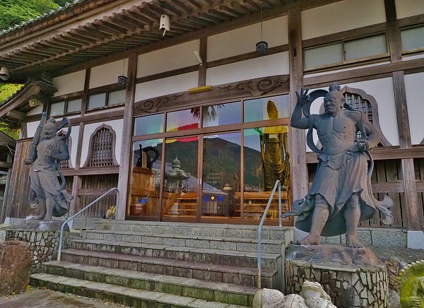
ここに仁王像像を置くんですね。
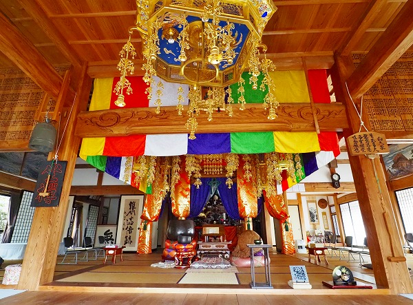
こちらはいたって普通の感じでした。
先程の観音堂の仏像の半分ぐらいこっちに持ってくればいいのに。
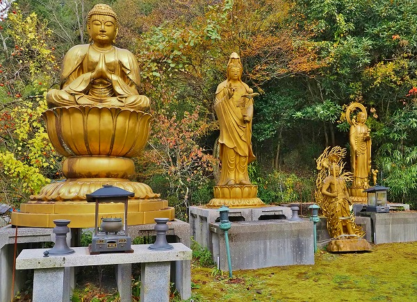
先程の観音堂の裏手には
まだまだFRPの仏像が控えていた。
必要以上に仏像だらけのお寺であった。
それにしても不思議なものである。
仏教の教えには欲を捨てる、煩悩を断つ、という考え方がある。
一方、（ここの寺院の事ではなく一般論として）豪華な堂宇やたくさんの仏像、過剰な装飾というものを良しとする傾向ももちろんある。
この矛盾はどこでどう折り合いをつけたら良いのだろう？
もっとヘンなお寺を観たい！コッテコテのお寺が観たい！見たこともないほどのデカい仏像が観たい！
とにかく、お寺でアガりた～い！！！！
…と常日頃思っている時点で私なんぞ煩悩の塊であり、欲まみれの極みの俗物なのです。
そんな外道にどうこう言われる筋合いはございませんね。
ただ、
原理と現実の乖離があるからこそ世界は面白く、愛おしいのだ。
おまけ
この長善寺の近く、琵琶湖のほとりに
金ぴかの門がある。
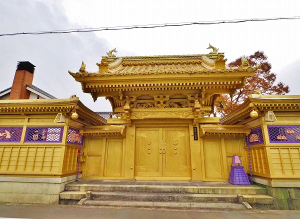
地図でみると海津迎賓館とあるがその正体は一切不明。
それにしても勢いが凄い。

建物の裏は琵琶湖の湖畔。
うすぼんやりとした湖面と金ぴかの門、そして先程の長善寺の圧縮陳列を思い浮かべていた。
何か凄いとこだな。マキノ町。
この後、両墓制の墓を色々巡ったのだが、それはまた別の機会に。